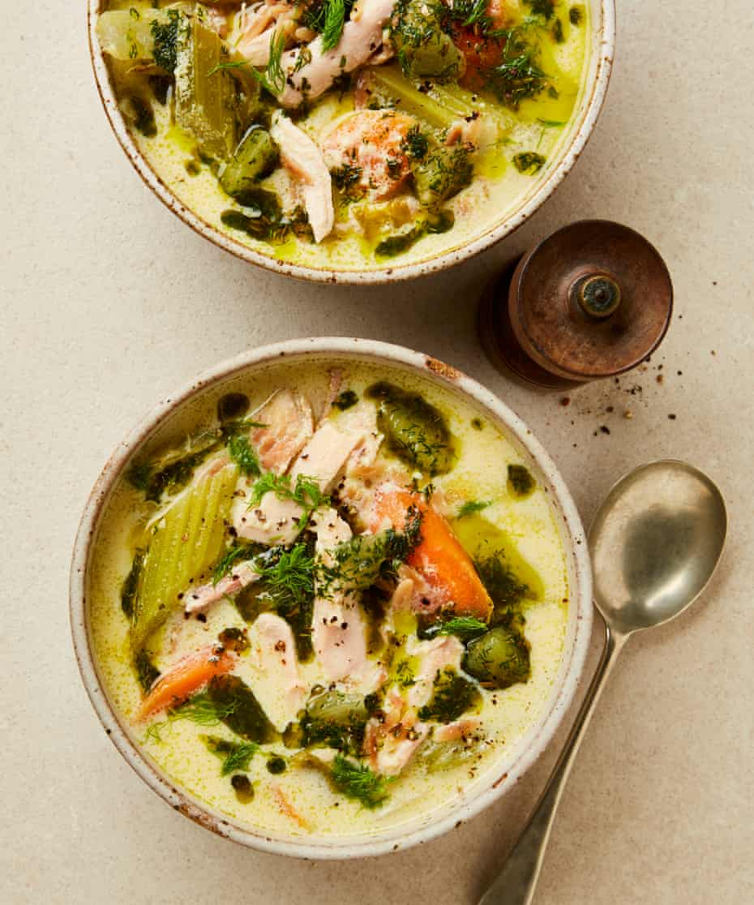

Avgolemono soup with fennel and dill oil

Avgolemono is a velvety chicken soup from Greecethat uses eggs and a liberal amount of lemon juice to thicken the base. Traditionally, rice is the added starch, but I’ve replaced it with orzo and added fennel and dill, too. You could easily use rice or another type of pasta, if you prefer.
Put the chicken, onion, peppercorns, white parts of the celery, fennel stems, bay leaves, garlic, thyme and one and three-quarter teaspoons of salt in a large saucepan for which you have a lid. Cover with two and a half litres of cold water and bring to a simmer. Once it starts to bubble, turn down the heat to medium, and leave to simmer gently for 45-50 minutes, until the vegetables are soft and the meat is tender, skimming off any froth as needed.
When ready, remove the chicken pieces from the stock and set aside on a tray to cool. Once cool enough to handle, break into bite-sized chunks, and discard the skin and bones. Line a large sieve set over a large bowl with a clean tea towel and carefully pour in the stock; discard the solids. Ladle 500ml of the stock into a small saucepan and keep warm on a low heat. Measure out the remaining stock to get 1.2 litres (top up with water if you don’t have enough).
Wipe clean the saucepan and put it back on a medium-high heat with three tablespoons of the oil. Once hot, add the carrots and cook, stirring occasionally, for five minutes, until slightly softened. Add the celery greens, fennel wedges and half a teaspoon of salt, stir and cook for another five minutes, until slightly softened. Pour in the stock and the orzo, bring to a simmer and cook, stirring once or twice to stop the pasta from sticking to the bottom, for seven minutes, until the orzo is al dente. Add the cooked chicken to the pot, stir well and turn the heat to low.
Meanwhile, whisk the eggs and egg yolks in a large bowl until completely smooth and bubbles appear. Put the bowl on a tea towel to prevent it from sliding around and, whisking constantly, slowly pour in the lemon juice and whisk until smooth. Pour in the reserved warm stock, whisking until smooth.
Stirring constantly, slowly pour the egg mixture into the soup and once fully mixed in, cook gently, still on a low heat, for another three to five minutes, until slightly thickened. Take off the heat and cover with a lid to keep warm.
Put the remaining 75ml oil in the small bowl of a food processor with the dill, blitz until almost smooth, then transfer to a small bowl.
Top and tail the whole lemon, use a small, sharp knife to remove the skin and pith, then slice between the membranes to release the segments. Chop each segment into three or four pieces, then transfer to the dill oil. Add the fennel seeds and a pinch of salt and stir to combine.
Ladle the soup into six bowls, top with the fennel fronds, a spoonful of the dill oil and a good grind of pepper and serve hot.